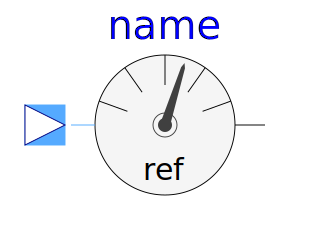
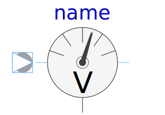
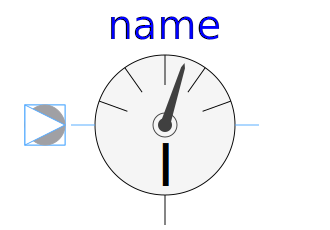
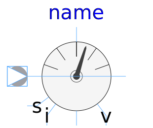

This package hosts sensors for quasi stationary single phase circuits. Quasi stationary theory for single phase circuits can be found in the references.
| Name | Description |
|---|---|
|  ReferenceSensor | Sensor of reference angle gamma |
| FrequencySensor | Frequency sensor |
|
|
Potential sensor |
|  VoltageSensor | Voltage sensor |
|  CurrentSensor | Current sensor |
| PowerSensor | Power sensor |
|  MultiSensor | Sensor to measure current, voltage and power |